Snowflake access explorer
- Who has what: every privilege a user, role or object has, with the role path that gives it, at any depth.
- Can they? One user, one privilege, one object: yes or no, every path, and what to revoke to remove it.
- What is wrong: 23 rule checks, who reads sensitive data and whether it is masked, and a sign-off review export.
Where the data comes from
Key: pill = actor · teal = code routine · grey DATA = tables · 2px ink border ENTRY = where viewers start · solid arrow = calls · dashed arrow = data moves · numbers = order.
- 1–3: the procedure reads grants, users, query history, tags, policies and streams with its owner's rights, then writes one run (
RUN_ID) into the snapshot tables. - The app's Rebuild snapshot in Snowflake button runs the same CALL, still with the owner's rights.
- 5, 7: the app and the SQL functions read only the last
STATUS = 'OK'run: nobody sees half a snapshot. - Viewers need no rights on ACCOUNT_USAGE or SHOW: SELECT on the
TBL_ACCESS_tables is enough. - My access skips the snapshot: it reads the viewer's own roles live, with the viewer's rights (below).
How a snapshot is built and read
Key: grey band = who acts · white = step · lavender diamond = decision · grey DATA = tables · pill = viewer · solid arrow = then · dashed arrow = data moves · numbers = order.
- Core datasets: grants, future grants, role → user, users. If one fails the run is FAILED and its rows deleted; tags, policies, streams or usage failing only marks that source
UNAVAILABLE. - Rebuild snapshot in Snowflake also clears the app's cache, so the new run shows at once; otherwise Reload page data or wait for the 1 h cache.
How to read a graph
Every graph runs left to right: the start, one lane per depth, then objects. Click a box to open it; hover a box or line for details.
- ENGINEER_01
- User (person or service)
- OLD_USER
- Disabled user
- F_ANALYST
- Functional role: a job role
- T_SALES_CORE_READ
- Technical role: holds the privileges
- GRP_ANALYSTS
- Group role or other (identity provider, PUBLIC)
- SYSADMIN
- Admin role or account privilege
- TBL_CUSTOMER
- Object; lock = sensitive
- Inherits: the left role is granted the right one
- Also deeper: the role is also reached by a longer chain
- Read: SELECT, REFERENCES, READ (stage), USAGE on database / schema
- Write: INSERT, UPDATE, DELETE, TRUNCATE, WRITE (stage), ADD …
- Own: OWNERSHIP
- Use: USAGE on warehouse, procedure, function; MONITOR
- Manage: CREATE …, MODIFY, OPERATE, APPLY …
- ACCOUNT
- Account: MANAGE GRANTS, EXECUTE TASK, …
- DEPTH 2
- Lane = roles from the start to the role, that role included
- T_X D2 · also D3
- Drawn once at its shortest depth; also reached at D3
- ! 4
- Breaks rule 4; red High, amber Medium, grey Low. Only High unless "All rule hits"
- SELECT ×40
- Arrow label: the privilege, on 40 objects of a group
- DB1 · 400 objects
- Group box: many objects of one schema or database; click to open
- ⋯ 47 roles ⋯
- Folded roles; click to draw them all
- +129 more
- Lane over 12 boxes; click to show all
User
?page=user&name=ENGINEER_01AnswersWhat can this user reach, through every role, at any depth, and how?
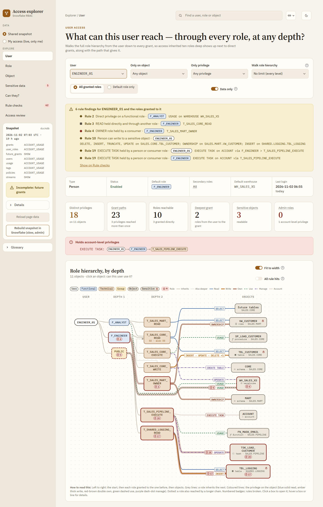
How to read
- Filters: user, Only on object, Only privilege, Walk role hierarchy (depth limit); All granted roles (as secondary roles ALL) or Default role only; Data only hides USAGE on databases and schemas.
- Amber banner: rule findings for the user and the roles granted to it. Red banner: admin roles or account-level privileges, with the chain.
- Graph: click an object to open Can they? for this user; click a role to open it.
- Below the graph: Privileges (shortest path each), every path of privileges reached more than once, Can read the data?, Sensitive data by granted role, Granted roles, Roles and warehouses used. Each table exports CSV.
Numbers
- Distinct privileges
- Privilege-on-object pairs reached, on N objects
- Grant paths
- All chains summed; a privilege with 2+ paths survives removing one role
- Roles reachable
- Roles the walk reaches; N granted directly
- Deepest grant
- Largest depth of any privilege
- Sensitive objects
- Sensitive objects it can read (
READ_PRIVS) - Admin roles
- Admin roles reached; caption: account-level privileges
- Profile
- Type, Status, Default role, Secondary roles (All / None), Default warehouse, Last login (dormant mark)
- Use role · Paths
- Granted role that carries the privilege · number of chains
- Used (30 d)
- Queries per granted role (7 d on the INFORMATION_SCHEMA fallback)
Role
?page=role&name=F_ENGINEERAnswersWho holds this role, what does it hold, and who loses what if it is revoked?
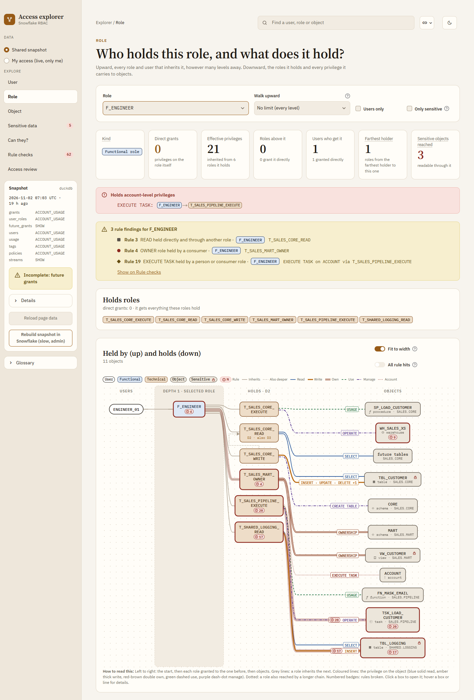
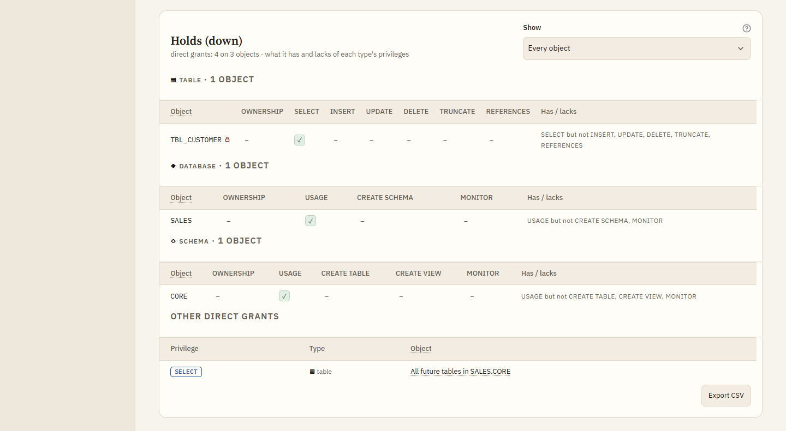
How to read
- Graph: holders on the left (Held by · Dn), the role in the shaded lane, what it holds on the right (Holds · Dn).
- Held by (up): every grantee with depth, Only via (roles every path passes through), path and path count. If revoked from a direct grantee: who loses the role and which privileges, net of other paths, with the fix text and REVOKE SQL.
- Holds (down): one table per object type, one column per privilege: ✓ granted, dashed ✓ inherited, owner implied by OWNERSHIP, – lacks. Show keeps objects lacking one privilege.
- Then Effective privileges (inherited, with path) and Can read the data? with this role in use. Filters: Walk upward, Users only, Only sensitive.
Numbers
- Kind
- Functional, technical, group or admin; owner role if any
- Direct grants
- Privileges on the role itself, incl. future grants
- Effective privileges
- Own plus inherited from the roles it holds ("all" for an admin role)
- Roles above it
- Roles that inherit it; N grant it directly
- Users who get it
- Users at any depth; N granted directly
- Farthest holder
- Roles from the farthest holder down to this one
- Sensitive objects reached
- Sensitive objects readable through it
Object
?page=object&name=SALES.CORE.TBL_CUSTOMERAnswersWho can touch this object, how, and what does each of them see of it?
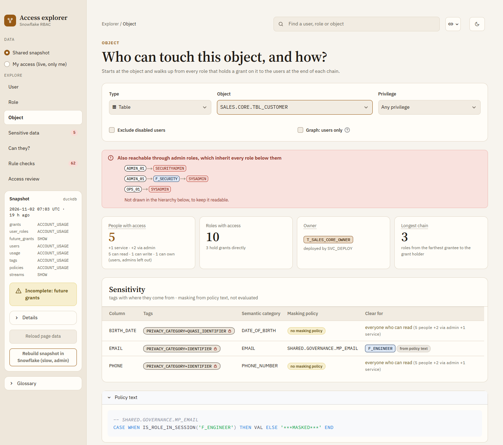
How to read
- Filters: Type, Object, Privilege; Exclude disabled users; Graph: users only.
- Red banner: users who reach it only through admin roles; not drawn in the graph.
- Sensitivity: tags with their origin (column, table, schema, database), masking policy per column and who sees it clear; Policy text shows each policy body.
- Effective access by user: a tick per privilege (click: Can they?), a cell per sensitive column and for rows, Via (granted roles per class), Depth, Paths. CSV adds Reviewer and Keep/Revoke.
- Then Paths into the object (graph), What each role sees (policies), All grantees.
Numbers
- People with access
- Enabled persons; service, disabled and via-admin users counted apart; read / write / own split
- Roles with access
- Roles at any depth; N hold grants directly
- Owner
- Role with OWNERSHIP; "deployed by" the build user
- Longest chain
- Roles from the farthest grantee to the grant holder
- Clear for
- Roles the masking policy shows in clear: "in session" counts inherited roles, "primary role only" does not; "everyone who can read" without masking
Can they?
?page=check&name=ENGINEER_01&obj=…&priv=SELECTAnswersCan user X use privilege P on object Y, through which paths, and how would it be removed?
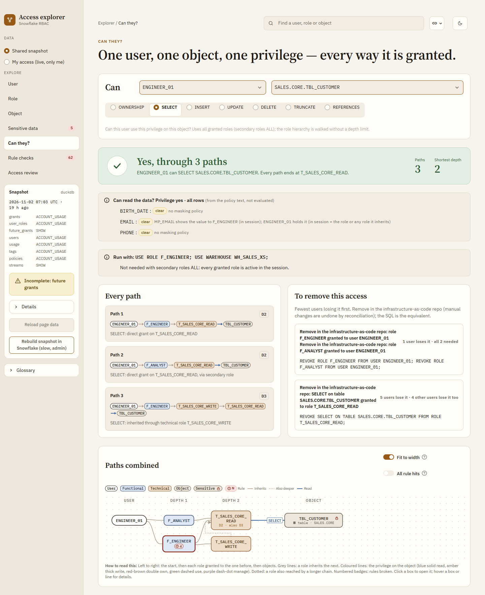
How to read
- Every granted role counts (secondary roles ALL); no depth limit.
- Answer: green yes; amber when the user is disabled or dormant; "via ownership" or "through admin role"; grey No.
- Can read the data?: rows and each sensitive column, from the policy text. Run with: the USE ROLE / USE WAREHOUSE that works without secondary roles.
- To remove this access: options with fewest users losing it first, as fix text plus equivalent REVOKE SQL; "all 2 needed" when several grants must go.
- No: What to ask for lists roles that would give it, fewest privileges first.
Numbers
- Paths
- Distinct chains that give the privilege
- Shortest depth
- Roles on the shortest chain, grant holder included
- Path n · Dn
- Each chain, its depth, and how the grant applies (direct, inherited through a technical role, via a secondary role when the default role is not on it)
- N users lose it
- Users who lose the privilege if that option is applied, net of other paths
Rule checks
?page=rules&rule=4&sev=High&grantee=…AnswersWhere does the role model break its own rules, and what is the fix?
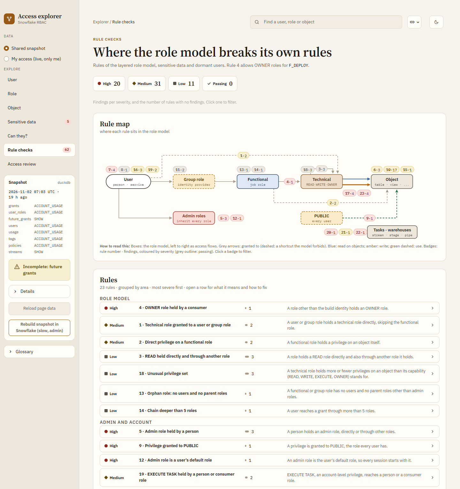
How to read
- Strip: findings per severity, plus Passing; click one to filter.
- Rule map: the role model as boxes; badge "rule · findings" sits where the rule applies; click to filter.
- Rules: grouped by area, most severe first; open a row for meaning, why, fix and an example.
- Findings: one row per rule and fix (same fix for many grantees merged), detail, path, fix as infrastructure-as-code text + SQL. People with admin roles: every admin holder with the chain.
Numbers
- High · Medium · Low
- Findings of that severity
- Passing
- Rules with no finding
- Affects
- Users who lose access when the fix is applied, net of other paths
- Nav badge
- All findings in the snapshot
The 23 rules
| # | Severity | Rule | Why it matters |
|---|---|---|---|
| Role model | |||
| 4 | High | OWNER role held by a consumer | Owners can drop and re-grant objects; only the build identity should own. |
| 1 | Medium | Technical role granted to a user or group role | Technical roles belong under functional roles only. |
| 2 | Medium | Direct privilege on a functional role | Privileges sit on technical roles, so the role model stays reviewable. |
| 3 | Low | READ held directly and through another role | The direct grant is redundant and survives when the other one is removed. |
| 13 | Low | Orphan role: no users and no parent roles | Unused roles hide access that nobody reviews. |
| 14 | Low | Chain deeper than 5 roles | Long chains are hard to review and hide where access comes from. |
| 18 | Low | Unusual privilege set | The role holds more or fewer privileges than its capability (READ, WRITE, ...) stands for, so its name no longer tells what it can do. |
| Admin and account | |||
| 5 | High | Admin role held by a person | Admin roles bypass the role model; use them through break-glass only. |
| 9 | High | Privilege granted to PUBLIC | Every user, present and future, gets it. |
| 12 | High | Admin role is a user's default role | Every session starts with admin rights. |
| 19 | Medium | EXECUTE TASK held by a person or consumer role | Running tasks belongs to the build or a service user. |
| Sensitive data | |||
| 7 | High | Dormant or disabled person can read sensitive data | Unused access to sensitive data is pure risk. |
| 22 | High | Stream on sensitive table readable without the table | A stream returns the table's changed rows, so it leaks data its reader cannot read in the table. |
| 6 | Medium | Sensitive column without a masking policy | Everyone who can read the object sees the value in clear. |
| 10 | Medium | Person can write to a sensitive object | Writes to sensitive data should come from the build or a service user. |
| 15 | Medium | Future grant in a schema that holds sensitive data | New tables there are readable before anyone classifies them. |
| 11 | Low | Sensitive object reachable through a group role | Group membership is managed outside Snowflake, so reviews miss it. |
| Read-only and write | |||
| 17 | High | Read-only role can write | The role name or its use says read-only, but it can change data. |
| 23 | High | CREATE privilege on a schema held by a read-only role | A read-only role that can create objects can copy data or change the schema. |
| Tasks, warehouses and objects | |||
| 20 | High | OPERATE on a task outside owner/build roles | The task runs with its owner's privileges, so whoever can start or resume it borrows them. |
| 21 | Medium | Warehouse MODIFY or OPERATE outside owner/build roles | Resizing, suspending or resuming a warehouse changes cost and availability for everyone. |
| Users and hygiene | |||
| 16 | Medium | Dormant user (no login for 90 days) still holds roles | Unused accounts are an easy way in. |
| 8 | Low | Disabled user still holds roles | Re-enabling the user brings all access back at once. |
Sensitive data
?page=sensitive&tag=…&db=…&a=…&b=…AnswersWhich objects hold sensitive data, who can read them, and is it masked?
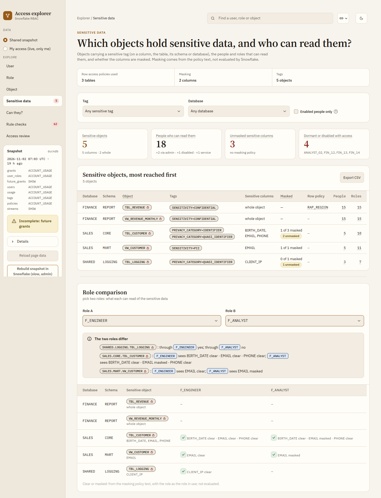
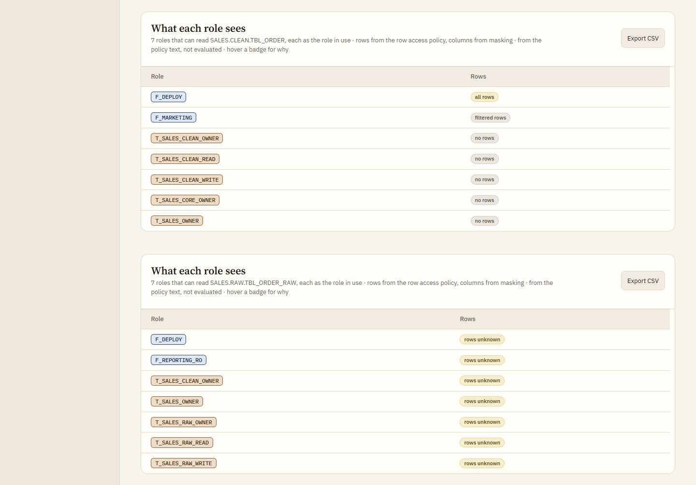
How to read
- Sensitive = a tag in
SENSITIVE_TAGSon a column, the object, its schema or database. - Top line: whether row access policies, masking and tags are used at all.
- Tables: sensitive objects, most reached first; who can read sensitive data (admin holders last); Role comparison of two roles, differences listed.
- Policies are read from their text, not evaluated: role listed = all rows / clear; role not listed and the body ignores the argument columns = no rows; role check AND argument condition = filtered; anything else = unknown.
IS_ROLE_IN_SESSIONcounts inherited roles,CURRENT_ROLE()only the primary role.
Numbers
- Sensitive objects
- Tagged objects; N columns · N whole objects
- People who can read them
- Enabled persons; via admin, disabled, service counted apart
- Unmasked sensitive columns
- Sensitive columns with no masking policy
- Dormant or disabled with access
- Non-service users not active who still read sensitive data
- Masked
- "k of n masked" per object
- People · Roles
- Readers per object; hover for names
Access review
?page=review&db=SALESAnswersWho can reach what in one database, as a list to sign off?
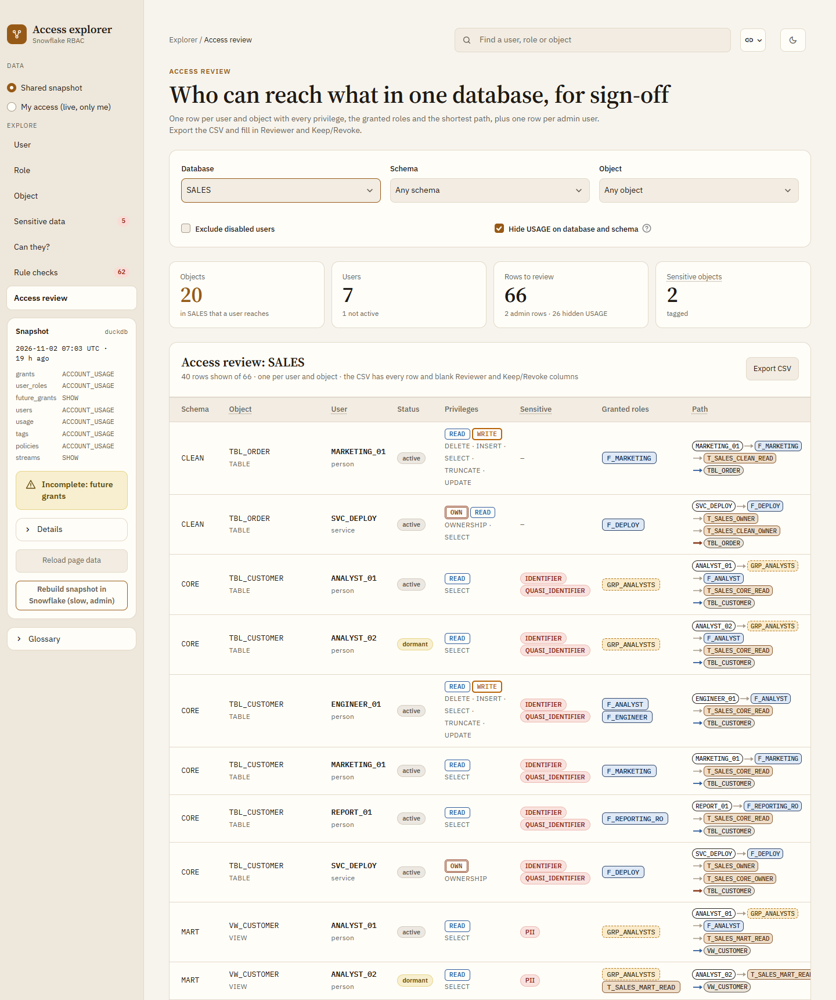
How to read
- Filters: Database (or all), Schema, Object, Exclude disabled users, Hide USAGE on database and schema (screen only).
- One row per user and object: privileges with class badges, sensitive tags, granted roles, shortest path; plus one row per admin user.
- Export CSV: every row, a header with run and filter, blank Reviewer and Keep/Revoke columns.
Numbers
- Objects
- Objects in the database that a user reaches
- Users
- Users with a row; N not active
- Rows to review
- All rows; N admin rows · N hidden USAGE
- Sensitive objects
- Tagged objects among them
Big accounts
?schema=DB.SCHEMA · ?full=1 · ?expand=3 · ?unfold=1AnswersHow do I read a graph with thousands of objects and hundreds of roles?
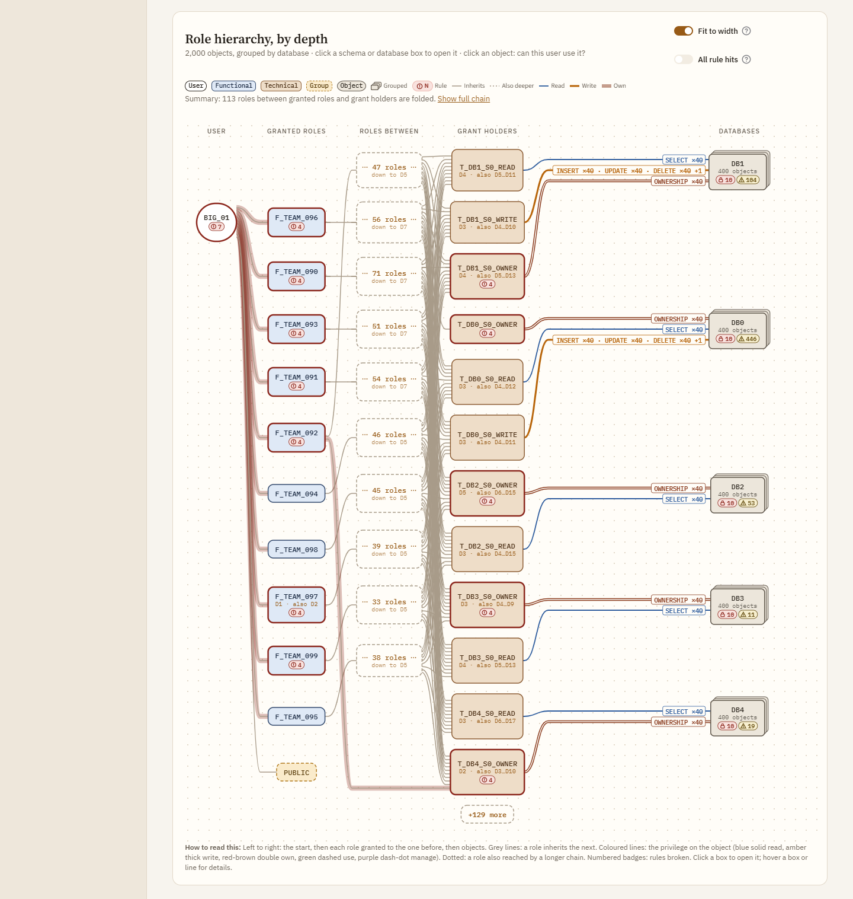
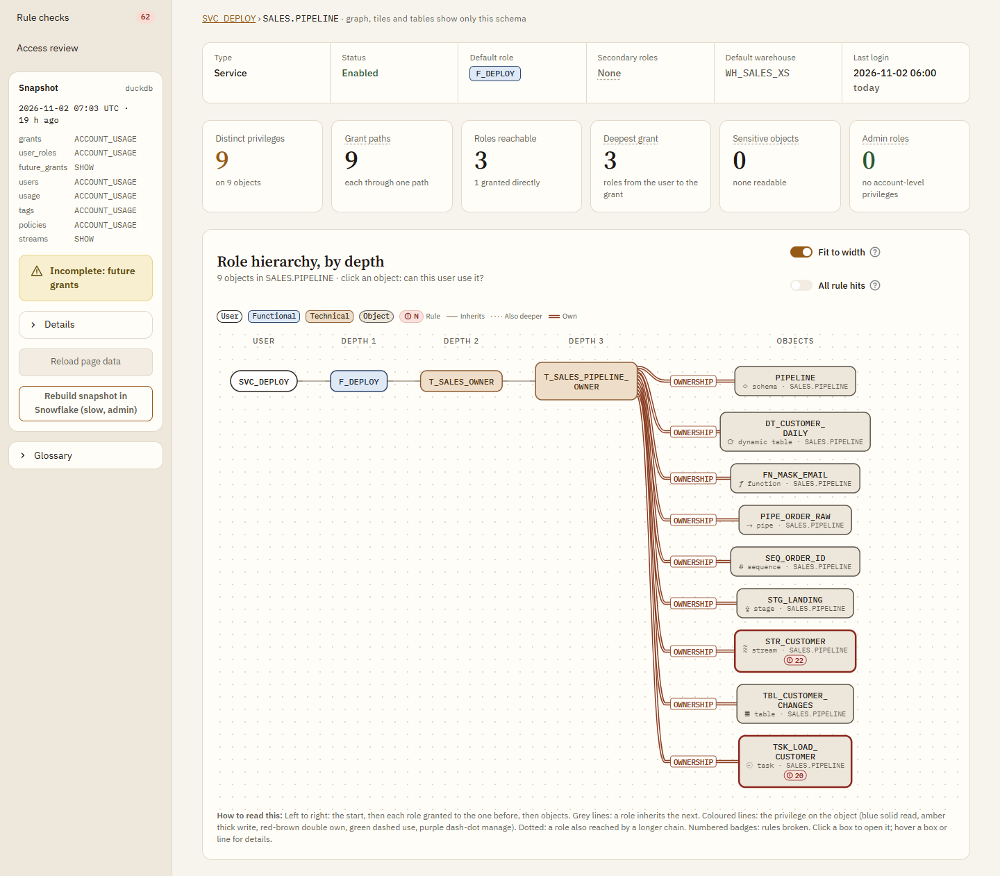
How to read
- Grouping: over 12 objects a graph groups them by schema, over 12 schemas by database. A database grant or a warehouse keeps its own box. Tables still list every object.
- Click a group box: the drill-down shows only that schema or database in graph, KPIs and tables; the breadcrumb goes back.
- Summary (User, Role): over 30 role boxes or 6 role lanes the graph shows granted roles → one "⋯ N roles ⋯" box each → grant holders (best of each group first) → groups. Show full chain or the fold box opens
?full=1. - Fit to width: scaled into the card, never below 75 % (then it scrolls); a run of 3+ single roles folds into one box.
Numbers
- Header
- "2,000 objects, grouped by database"
- Group box
- N objects; lock N = sensitive objects; warning N = findings
- SELECT ×40
- The privilege on 40 of the group's objects
- Fold box
- Roles between a granted role and its grant holders; "down to D7" = deepest
- Summary note
- Roles folded in all
- +N more
- Boxes past the first 12 of a lane
My access
?data=mineAnswersWhat can I reach, read live with my own rights, without the shared tables?
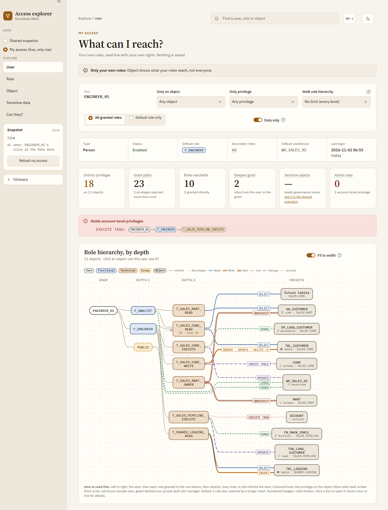
DEMO_USER's slice of the fake data).How to read
- Sidebar Data: My access (live, only me), then Load my access. Nothing is written; kept in server memory per browser for 1 h.
- Pages: User (titled My access), Role, Object, Sensitive data, Can they?. Rule checks and Access review are hidden.
- Object shows what your roles reach, not everyone. No tags or policies: sensitivity shows "—" with a link to the shared snapshot; no rule hits.
- KPIs as on the User page.
Sources
- Roles
CURRENT_AVAILABLE_ROLES()- Grants
SHOW GRANTS TO ROLE / USER- Profile
DESC USER- Roles used
QUERY_HISTORY_BY_USER(7 days)
Settings (env vars)
| Variable | Default | Does |
|---|---|---|
FAKE | 1 | 0 = Snowflake via ../sf.py |
DUCKDB | DuckDB file with the snapshot tables (wins over FAKE) | |
ACCESS_SNAPSHOT | <DB>.<SCHEMA> of the tables (Snowflake only) | |
DEMO_USER | ENGINEER_01 | Default user, and the "me" of My access outside Snowflake |
ROLE_PREFIXES | F_,T_ | Functional and technical role prefixes |
BUILD_ROLES | <functional prefix>DEPLOY | fnmatch patterns of the build identity: may hold OWNER roles (rule 4), skipped by rules 17, 19–23 |
MAX_HOPS | 50 | Safety cap on role hops per walk |
MAX_PATHS | 200 | Full chains listed per row; path counts are always exact |
CAP_PRIVS | READ: SELECT, REFERENCES, USAGE, READ · WRITE: READ + INSERT, UPDATE, DELETE, TRUNCATE, WRITE · EXECUTE: USAGE · OWNER: OWNERSHIP | Rule 18: standard privileges per capability suffix, JSON |
SENSITIVE_TAGS | PRIVACY_CATEGORY=IDENTIFIER|QUASI_IDENTIFIER|SENSITIVE,SENSITIVITY=PII|CONFIDENTIAL | Tag (last name part, any case) = values that make data sensitive; no = = any value |
READ_PRIVS | SELECT,OWNERSHIP | Privileges that count as "can read" |
DORMANT_DAYS | 90 | No login for this long (or never) before the run's FINISHED_AT (rules 7, 16) |
MAX_DEPTH_RULE | 5 | Rule 14 threshold |
READ_ROLE_PATTERNS | _READ$|_READ_|_R$|_R_|_RO$|_RO_|READONLY|READ_ONLY|VIEWER|_VIEW$|REPORTING|_RPT | Rule 17 name heuristic (regex, any case) |
READ_SHARE, READ_MIN_OBJECTS | 0.8, 5 | Rule 17 behaviour heuristic: share of tables/views a role only reads, over at least this many |
Limits
- Data is as old as the last CALL, plus up to ~2 h ACCOUNT_USAGE lag; tags need Enterprise edition.
- Live session roles of other users can't be read: the app shows defaults and roles used in queries.
- SHOW fallback: 2 queries per role (slow on many roles); query history then 7 days or none.
- Database roles are not modelled.
- Masked / clear and all / filtered / no rows come from the policy text, not evaluated; subqueries, mapping tables, UDFs, NOT, CASE, user checks give "unknown".
- Sensitive reach counts
READ_PRIVSon the object only; USAGE on its database/schema is not checked. - Rule 17 is a heuristic (name or mostly-read behaviour); review before acting. Rule 13 skips technical roles.
- Object, Can they? and Access review list every path into an object: the slow part on very large, nested accounts.
- Pages render one at a time per app process (
access.pykeeps lookups in module globals, under a lock). - My access has no tags or policies, so no sensitivity, rule checks or access review.